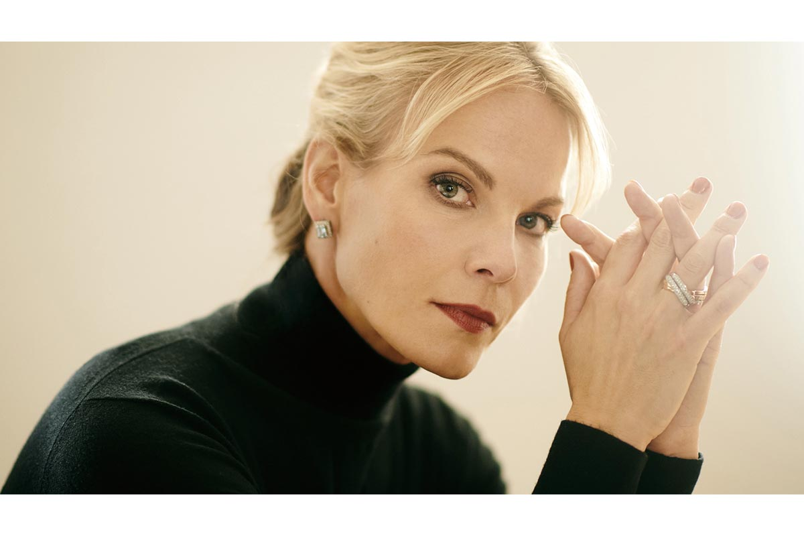

現代オペラ界の頂点に君臨するエリーナ・ガランチャ。日本でも絶大なファンが多く、オペラファンの間で彼女を知らない人はいないだろう。音楽紙『GRAND OPERA』（音楽之友社）のオペラ歌手投票では、日本でも馴染みのアンネ・ゾフィー・フォン・オッター、チェチーリア・バルトーリといった歌手を押さえ堂々の1位を獲得しており、その人気と実力は証明されている。
過去20年以上にわたってオペラ界のスターの一人として頂点で活躍を続けるエリーナ・ガランチャの偉業を達成できた歌手は、他にはほとんどないだろう。ラトヴィア生まれのメゾソプラノが演じる象徴的な主役は常に称賛されている。
彼女は、演じるそれぞれの役との深いつながりを築くものを感じ、勉強する。特別な感覚と情熱的な声から、圧倒的な存在感、魅惑的なカリスマで完璧なバランスを作る素晴らしいアーティストである。
彼女は世界的に有名なオペラハウス（メトロポリタン歌劇場、ロイヤル・オペラ・ハウス、ウィーン国立歌劇場、ベルリン国立歌劇場）などで、定期的に代表的な演目の主演を演じる。女性歌手として最年少で宮廷歌手（Kammersängerin）の称号を授与された。
2005年にドイツ・グラモフォンの専属アーティストとなり、これまでに7枚のソロアルバムをリリース。そのうち5枚はヨーロッパのグラミー賞ともいわれるエコー・クラシック賞（ECHO Klassik）を受賞している。代表的な公演はDVDなど様々なディスコグラフィーとしても発表されている。
それぞれのオペラやコンサートで活躍する一方、『Primadonna on Rollerskates』（2002）など数多くのドキュメンタリーやトークショーにも出演。オーストリアの Ecowin Verlag から彼女の伝記が出版されている。
1999年にニコラウス・アーノンクール指揮のもと、モーツァルト「皇帝ティートの慈悲」（Annio役）でザルツブルク音楽祭にデビューしたことが国際的な突破口となった。「カヴァレリア・ルスティカーナ」（Lola役）でウィーン国立歌劇場にデビューし、のち専属ソリスト歌手として頭角を現した。バルカン系のドラマティックな役で群を抜く存在になる以前は、モーツァルト作品を多く歌っていた。
出演演目には、リッカルド・ムーティと共演した「フィガロの結婚」（Cherubino役）、「ばらの騎士」（Octavian役）、テレビ放映された「コジ・ファン・トゥッテ」のヴェルサイユ公演（Cherubino役）などがあり、現在までに150以上の演目に出演している。
2003年には「コジ・ファン・トゥッテ」（Dorabella役）でロンドンのロイヤル・オペラ・ハウス、「皇帝ティートの慈悲」（Sesto役）でベルリン国立歌劇場のデビューも果たした。
2008年には「セビリアの理髪師」のロジーナを歌い、メトロポリタン歌劇場でセンセーショナルなデビューを飾った。
2009年、ロイヤル・オペラ・ハウス、メトロポリタン歌劇場でのリチャード・エアー演出による「カルメン」では、ロベルト・アラーニャの相手役を務め、彼女の代表的なパフォーマンスとして世界中の1500以上の劇場でその模様がライブビューイングとして放映された。
その他にも、メトロポリタン歌劇場で出演したモーツァルト作曲「皇帝ティートの慈悲」もメトロポリタン・ライブビューイング・シリーズに加えられ、これらの作品はPBS TVの「メトロポリタン歌劇場グレートコンサート」として放映された。PBSの「グレートコンサート」シリーズ40周年記念番組では、ジュリー・アンドリュース、アイザック・スターンら世界的なスターたちと共に特別コンサートに選ばれている。
世界的なソプラノスター、アンナ・ネトレプコと共演し、ファビオ・ルイージ指揮ウィーン交響楽団の演奏でドリーブ作曲「ラクメ」よりエア「カチンタ」を収録。ウィーン国立歌劇場でのドニゼッティ作曲「アンナ・ボレーナ」の公演はテレビ放映され、後にDVD化された。
このアンナ・ネトレプコとのペアでバーデン＝バーデン祝祭劇場のオペラガラ・コンサートにも出演。ドイツのテレビ局では二百五十万人もの視聴者にライブ中継され、DVD化もされた。
その他の特別なレコーディングとしては、スカラ座でのリッカルド・シャイー指揮、ヴェルディ作曲「レクイエム」、ドレスデン・シュターツカペレでのクリスティアン・ティーレマン指揮、ベートーヴェン作曲「ミサ・ソレムニス」、グスターヴォ・ドゥダメル指揮ベルリン・フィルハーモニー管弦楽団との共演でのニューイヤーズ・イヴ・コンサートなどがある。
これまでの7枚のソロアルバムの最初の作品『Aria Cantilena』はECHO Klassik Music の "Singer of the Year" を受賞、『Bel Canto』では BBC Music Magazine Award を受賞、『Romantique』は ECHO Klassik 2013 のベスト・ソロ・レコーディング賞を受賞している。
2014/2015年シーズンは、アルバム『Meditation』のリリースから始まった。彼女とアラーニャはメトロポリタンでの「カルメン」の主役を歌い、続く「カルメン」でスカラ座でのデビューも果たした。
シュトラウスの「ばらの騎士」のためにウィーンとベルリンに戻り、「カヴァレリア・ルスティカーナ」では、ヨナス・カウフマンとパートナーを組んだ。ミラノにてリッカルド・シャイー指揮のヴェルディ作曲「レクイエム」のソリストとして「プリマドンナ・チーム」に参加し、ザルツブルクへと戻った。
カーネギー・ホールでジェームズ・レヴァインの指揮でマーラーの作品を歌い、カレル・マーク・チチョンとのヨーロッパ・ツアーも引き受けた。同シーズンに行ったカーネギー・ホールとスカラ座でのリサイタルのほか、ヨナス・カウフマンと再び組み、ロンドン、ハンブルク、ウィーン、ザルツブルクでリサイタルを行った。サマーシーズンでは人気の高い「Elīna Garanča and Friends」コンサートをオーストリアで行い、ザルツブルク音楽祭ではマスネ「ウェルテル」（Charlotte役）に出演している。